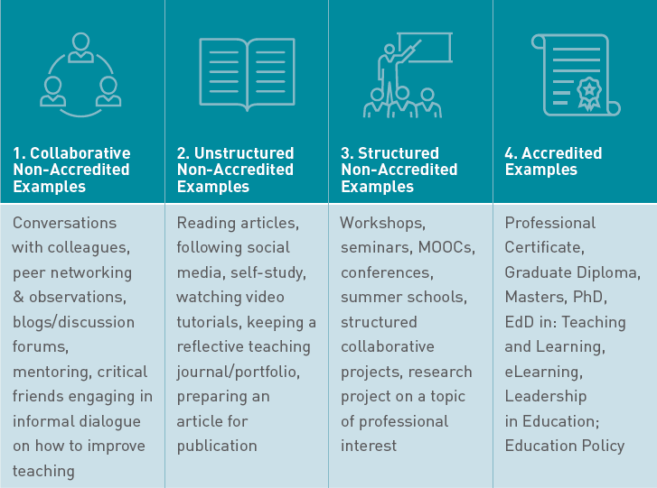
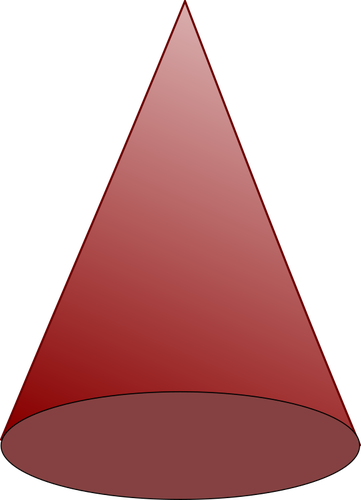
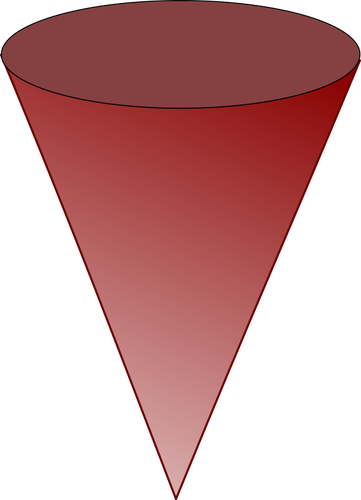

Digital Design Group
Update on IUADigEd - March 9th 2020
Link to slides

Licensed CC-BY under Creative Commons Attribution 4.0
Click 'F' for fullscreen
Presented by David Moloney
UL Project Lead for the
IUA Enhancing Digital Teaching & Learning Project

🌐 daveymoloney.com & @daveymoloney on Twitter
Update - Pilot Phase 2 @ UL
About the Project
National Project Team
The #IUADigEd team is made up of the project manager, Dr Sharon Flynn, and student associate intern, based in the IUA, and project team members based locally within each of the 7 participating universities
Keep up to date with the #IUADigEd project
4 Underpinning Project Principles

Empowerment & Sustainability
My role focusses on the development and enhancement of the groups of professionals I work with, with regard to their digital teaching and learning competence
Structured non-accredited PD opportunities
Who's Involved
Expression of Interest form
Pilot Phase 2 - 7 Pilot Projects
| Group | Submission Lead | # Involved | Faculty |
|---|---|---|---|
| PESS | Antonio Calderon | ~8 | EHS |
| MSc in MLF | Erin King | ~4 | KBS |
| SAH | Anne O'Connor | ~20 + 5 | EHS |
| MDU | Jennifer Farrell | ~5 + 30 | KBS |
| PDT | Bernard Hartigan | ~5 | S+E |
| IWA | Alan Dormer | ~5 | AHSS |
| MedEx | Catherine Woods | ~6 | EHS |
Approach Taken
Targetted vs Institutional
 What's In It For Them
What's in it for them?
Mentoring & Support 🤝
Professional Development Workshops 🗺
Digital CPD 💻
Support from a Community of Practice 🚀
What's in it for them? (2)
As an individual 🧑🦰
The opportunity to obtain a national microcredential
As a disciplinary group👥👥
Opportunity to apply for a national DELTA award
(Disciplinary Excellence in Learning, Teaching and Assessment)
- There is ~20 hours time committment for participants.
- The National Forum will award a digital badge/microcredential to participants who provide evidence that they have met the relevant criteria at the end of their PD journey.
- The microcredential will be associated with the National Professional Development Framework.
Ultimately
IUADigEd intends to provide educators with a professional development experience that facilitates them to explore, investigate, practice, plan, implement, reflect on and evaluate digital teaching & learning practices in a collaborative and supportive environment with colleagues and peers
Personal & Professional Digital Capacity

is prioritised as a key area for professional development
within the scholarship of teaching & learning
Criteria
- Reflect on your personal strengths and the areas where you can enhance the ways in which you use digital technologies for teaching and learning, using the DigCompEdu framework.
- Explore and demonstrate familiarity with at least one core digital competency area of the DigCompEdu framework.
- Plan the implementation of a technology-based activity for teaching/learning/assessment in your subject area.
- Plan the evaluation of a technology-based activity you are implementing, considering what success would look like and how you would demonstrate this.
Establishing a Community of Practice
During this CPD opportunity, efforts will be made to establish a Community of Practice amongst group participants.
Currently, it is envisaged that Microsoft Teams, within ULs Office 365 environment, will be used to accomodate elements of an online CoP.
Devising Professional Development Opportunities
Structure of Engagement
Let's try to tie down some CPD topics
| Mode | 1 | 2 | 3 | 4 |
|---|---|---|---|---|
| F2F | DigCompEdu Self-Assessment | Topic? | Topic? | Topic? |
| Online | Interaction? | Interaction? | Interaction? | Interaction? |
This Group's Vision?
Oh the dream... https://t.co/xxy1K75TMC
— Darina Slattery (@pmrdms) March 5, 2020
DigCompEdu
Project activities across all universities will hang from the DigCompEdu framework
Competences
22 distinct competences within the defined areas
Cross-university snapshot of competences dealt with in PD from pilot phase 1
Proficiency Levels & Indicators

Newcomer (A1) to Pioneer (C2)
Invitation To You
Proposition
Opportunity for you all to have a voice within relevant parts of this
Quid Pro Quo
Once I have developed and run PD workshops for a few groups, I would be happy to facilitate f2f or online workshops for groups that you are working with
Research Study
Research Study
The central focus of my research study at UL is on exploring the impact of the project on the student experience. The project aims to support university academic staff to develop their digital competences and skills so that students’ learning experiences can in turn be enhanced with technology.If Staff volunteer to participate
They will receive an email from the principal investigator inviting them to write individual reflections on their engagement with- the DigCompEdu Framework self-assessment tool, both in advance of, and subsequently a second time on completion of, your engagement with the project, and
- the professional development workshops, etc. and subsequent value of this staff development through guided reflections.
Impact on Students
This study will also investigate, via Focus Groups, the student experience of digital teaching and learning at UL and the impact the project has on that experience over the lifetime of the project (2019 - 2022). There is potential for longitudinal results for groups who I continue participation with.Wrap-up
What's Next?
Develop
Facilitate
Communicate
Evaluate